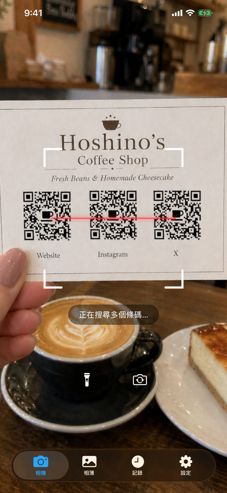
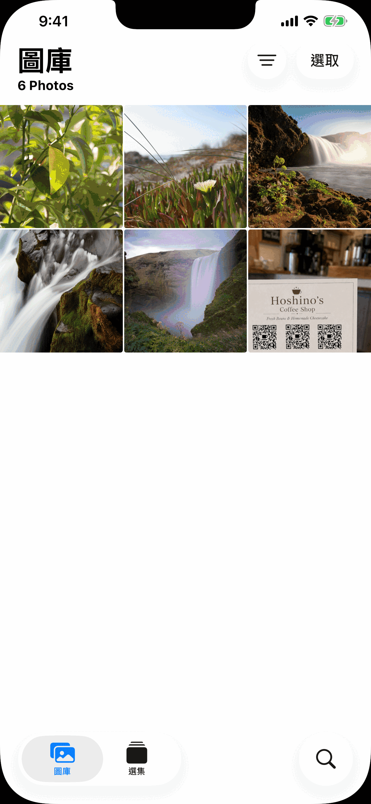
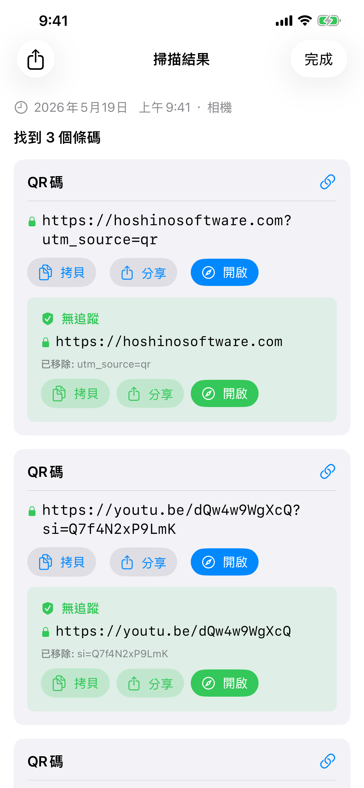
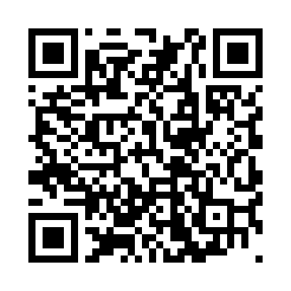
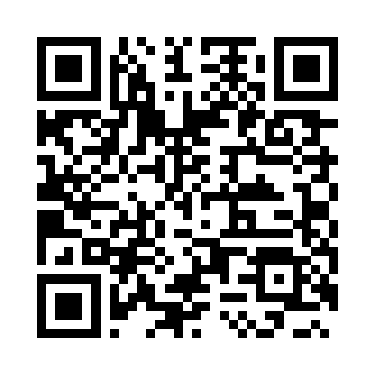
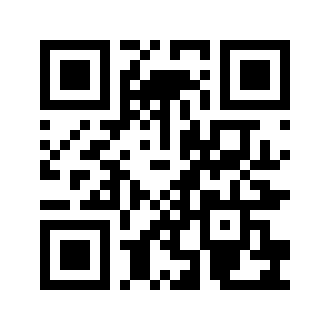
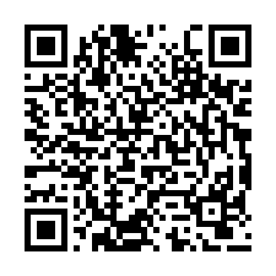

掃碼器
掃碼器 使用 iPhone 相機或相片圖庫中的任何圖片來掃描條碼和 QR 碼。 完全免費，離線運作，不在雲端儲存任何內容，且從不顯示廣告。
下載


掃碼器可在 App Store 取得。無需帳戶。需要 iOS 18 或更高版本。進階詳細資訊、多碼掃描、長期歷史記錄和歷史搜尋都已包含在應用程式內。
支援
有問題、發現 bug，或需要應用程式使用協助？請聯絡我們，我們閱讀每一條訊息。
聯絡前請先確認
許多常見問題已在下方的使用手冊和常見問題中解答。請先進行以下快速確認：
- 相機無法使用？前往 iPhone 設定 → 隱私權與安全性 → 相機 → 為掃碼器開啟存取權限。
- 找不到歷史記錄？點選歷史記錄索引標籤。掃碼器會在你的裝置上保留最多 10,000 筆掃描記錄，無時間限制，並且可按碼內容搜尋。
- 無法掃描條碼？請確保光線充足並保持條碼穩定。如有圖片檔案，可嘗試圖庫模式。
- 應用程式閃退？強制關閉後重新開啟。若問題持續，請來信並告知您的 iPhone 型號及 iOS 版本。
常見問題
- 需要網際網路連線嗎？
不需要。掃碼器 完全離線運作。 - 會收集我的資料嗎？
不會。任何內容都不會上傳到任何地方。掃描歷史記錄僅儲存在您的裝置上。 - 會存取我的整個相片圖庫嗎？
不會。在相簿標籤頁中，您透過系統照片選擇器選取單張照片。掃碼器 從不獲得存取您圖庫的權限。 - 掃描感覺慢？
請在設定中檢查是否開啟了掃描多個碼。多碼掃描會短暫等待，以便在顯示結果前收集最多 5 個可見碼。如果你通常一次只掃描一個碼並希望回應最快，請將其關閉。 - 為什麼多碼模式會稍慢一些？
多碼模式一次最多偵測 5 個碼。相機在顯示結果前，會在短暫的影格時間視窗內收集碼，以確保捕捉所有可見的碼。 - 掃描歷史記錄保存多久？
掃碼器會在你的裝置上保留最多 10,000 筆掃描記錄，無時間限制。歷史記錄標籤頁還支援對每個碼的解碼值進行全文搜尋。 - 為什麼不自動跳轉到連結？
這是有意為之的。偽造或惡意 QR 碼隨處可見，在停車場、餐廳桌上等地方都很常見。在開啟連結前顯示 URL，讓您能夠驗證其是否安全。 - 我可以選擇使用哪個相機鏡頭嗎？
可以。在相機畫面點按旋轉按鈕可在 iPhone 的鏡頭之間切換，或長按從清單中選擇。App 會記住你的選擇，下次以同一鏡頭開啟。
使用手冊



相機
相機標籤頁開啟後立即開始掃描。將手機對準任意條碼或 QR 碼，應用程式會自動偵測。需要相機權限。如果尚未授權，將出現提示。點選開啟設定，為 掃碼器 啟用相機存取權限。
- 手電筒：點按手電筒按鈕可照亮昏暗環境。僅在具備閃光燈的相機上可用。
- 切換相機：點按旋轉按鈕可在 iPhone 的所有鏡頭之間切換（超廣角、廣角、望遠和前置，依機型而異）。長按可從清單中選擇特定鏡頭。App 會記住你上次使用的相機，下次繼續使用。
相簿
相簿標籤頁可讓您從現有圖片中掃描碼。點選選擇照片，從圖庫中選取任意圖片。只有您選擇的特定照片會與應用程式共享。掃碼器 不會要求存取您的整個相片圖庫。
選擇照片後，應用程式立即掃描並顯示結果。如果未找到任何碼，將彈出提示通知您。
歷史記錄
每次掃描都會自動儲存到歷史記錄標籤頁。掃碼器會在你的裝置上保留最多 10,000 筆掃描記錄，無時間限制，並包含全文搜尋。
- 查看過去的掃描：點選任意列，重新開啟完整結果。
- 刪除單筆記錄：向左滑動某列，點選刪除。
- 刪除全部：點選右上角的垃圾桶圖示。
- 來源標籤：每筆記錄顯示其來自相機、相簿還是分享。
- 搜尋：在搜尋列中輸入任意文字，記錄會在你輸入時根據每個碼的解碼值進行過濾。
設定
設定標籤頁包含功能開關，下面是應用程式資訊。
掃描多個碼
預設情況下，掃碼器找到一個碼後就會停止。開啟掃描多個碼後，可一次偵測最多 5 個碼，適用於名片、產品單頁或包含多個並排碼的圖片。相機在首次偵測後會繼續短暫掃描，以收集所有可見的碼再顯示結果。
顯示進階詳細資訊
開啟顯示進階詳細資訊後，每個掃描結果旁會顯示技術中繼資料：QR 版本、錯誤校正等級、遮罩圖案或條碼結構（起始/終止字元、校驗位）。這些資訊會顯示在結果頁面和歷史記錄標籤頁的各列中。
掃描結果
在設定中開啟顯示進階詳細資訊後，結果頁面會出現兩個額外部分：
- 解碼資料：條碼內編碼的原始字串，在任何解析之前的狀態。
- 結構：條碼的技術分解：起始/終止字元、校驗位、保護圖案以及根據碼類型不同而存在的類似元素。
對於 QR 碼，還會出現顯示版本號、錯誤校正等級和遮罩圖案的中繼資料標籤。
追蹤參數偵測
當 URL 包含追蹤參數時，掃碼器 會在原始資料下方顯示綠色的無追蹤卡片。卡片中顯示清理後的 URL，並以已移除：列列出被去除的參數（UTM 標籤以及來自 Facebook、Google Ads、Microsoft、TikTok 等平台的點擊 ID），還有複製 / 分享 / 開啟按鈕，所有按鈕都基於清理後的 URL 操作。您可以在不被追蹤的情況下存取同一頁面。
從其他應用程式掃描
您可以掃描出現在其他應用程式（訊息、電子郵件、文件檢視器或網路瀏覽器）中照片裡的碼，無需離開該應用程式。
使用分享：
- 在相簿或任意應用程式中開啟圖片，然後點選分享按鈕。
- 在出現的應用程式列表中，找到並點選 掃碼器。如果看不到，請捲動到列表末尾並點選更多。
- 應用程式開啟並自動掃描圖片。
使用動作：
- 在相簿或任意應用程式中開啟圖片，然後點選分享按鈕。
- 捲動應用程式列表下方的動作列，點選 Scan for Codes。
- 應用程式開啟並自動掃描圖片。
主畫面小工具
您可以在主畫面上新增小工具，作為進入應用程式的捷徑。點選即可直接開啟相機，隨時可以掃描。小工具有三種尺寸（小、中、大），您可以根據主畫面版面選擇合適的尺寸。
- 長按主畫面空白區域，直到圖示開始搖晃。
- 點選左上角的 + 按鈕。
- 搜尋 掃碼器。
- 選擇尺寸，然後點選加入小工具。
- 之後可以長按小工具，選擇編輯小工具來調整大小。
Control Center
Control Center 是從螢幕右上角向下滑動時出現的面板。您可以在其中新增 掃碼器 按鈕，從任何地方（包括鎖定畫面或使用其他應用程式時）一鍵啟動相機。
- 從右上角向下滑動，開啟 Control Center。
- 點選 + 按鈕進入編輯模式。
- 在列表中找到 掃碼器，點選以新增。
- 在編輯模式下，您可以拖曳來重新定位並調整大小。
支援的碼類型
| 碼 | 備註 |
|---|---|
| QR Code | 最常見的 2D 碼，用於 URL、Wi-Fi、聯絡人等 |
| Micro QR | QR Code 的緊湊變體，適用於空間有限的小標籤 |
| Aztec | 用於登機證和交通票務 |
| Data Matrix | 常用於製造業、醫療和物流領域 |
| PDF417 | 用於駕照、登機證和快遞標籤 |
| Micro PDF417 | 緊湊型 PDF417，適用於藥品包裝等小型物品 |
| EAN-8 | 用於小型零售商品的短條碼 |
| EAN-13 | 全球大多數消費品上的標準零售條碼 |
| UPC-E | 用於美國/加拿大小型零售包裝的緊湊型條碼 |
| Code 39 | 最古老的條碼之一，常見於工業場景 |
| Code 93 | Code 39 的高密度後繼版本 |
| Code 128 | 廣泛用於物流和快遞的高密度條碼 |
| ITF-14 | 印刷在瓦楞紙板運輸箱上的 14 位條碼 |
| Codabar | 用於圖書館、血庫和部分快遞公司 |
| GS1 DataBar | 用於農產品和生鮮食品等小型商品的緊湊型零售條碼 |
| GS1 DataBar Expanded | 擴充變體，可攜帶重量和有效期等額外資料 |
不支援：
| 碼 | 備註 |
|---|---|
| EAN-2 / EAN-5（附加碼） | 附加在 EAN-13 上的短數字補充碼，用於雜誌期號和書籍定價 |
| rMQR | 矩形微型 QR，一種為窄標籤設計的新型緊湊 QR 變體 |
| MaxiCode | UPS 在運輸標籤上使用的 2D 點陣碼 |
| SP Code | 編碼語音音訊資料的日本無障礙條碼 |
| 郵政條碼 | 各國郵政服務使用的 4 狀態郵政條碼（USPS Intelligent Mail、Royal Mail、Australia Post、Japan Post 等） |
| 專有應用程式碼 | 只有發行方應用程式才能掃描的自訂視覺碼 |
示範碼
用相機直接從螢幕掃描，或截圖後使用相簿標籤頁。
 | QR Code 含追蹤參數的 URL https://hoshinosoftware.com?utm_source=review&utm_campaign=demo |
 | QR Code 帶標籤的連結（URL 在第二行） CodeReader https://hoshinosoftware.com/codereader/ |
 | QR Code 應用程式深層連結 (scheme://) itms-apps://apps.apple.com/app/id6761772999 |
 | QR Code 無可開啟應用的深層連結 noappopensthis://demo |
 | QR Code HTTP，含追蹤與編碼文字 http://ja.wikipedia.org/wiki/QR%E3%82%B3%E3%83%BC%E3%83%89?utm_source=qr |
 | QR Code Wi-Fi 網路 WIFI:S:example-wifi;T:WPA;P:example-password;; |
 | QR Code 電子郵件 mailto:test@example.com |
 | QR Code 聯絡人 (vCard) BEGIN:VCARD VERSION:3.0 N:Last;First FN:First Last ORG:Company TITLE:Job Title ADR:;;Street;City;CA;90401;USA TEL;WORK;VOICE: TEL;CELL:+1234567890123 TEL;FAX: EMAIL;WORK;INTERNET:example@example.com URL:https://example.com END:VCARD |
 | Micro QR 適用於小標籤的緊湊 QR HELLO |
 | Aztec (Full) 交通 / 登機證 AZTEC-DEMO-CODE |
 | Aztec (Compact) 適用於小標籤的緊湊變體 AZTEC-DEMO-CODE |
 | Data Matrix (Square) 製造業 / 醫療 DATAMATRIX |
 | Data Matrix (Rectangular) 適用於窄標籤的矩形變體 DATAMATRIX |
 | PDF417 身份證件 / 快遞標籤 PDF417 SAMPLE DATA |
 | Micro PDF417 適用於小型物品的緊湊 PDF417 MICROPDF417 SAMPLE DATA |
 | EAN-13 零售條碼 5901234123457 |
 | UPC-E 緊湊零售條碼（美國/加拿大） 01234565 |
 | Code 128 物流 / 快遞 CODE-128-DEMO |
 | ITF-14 運輸箱條碼 12345678901231 |
 | GS1 DataBar 適用於小型商品的緊湊條碼 0112345678901231 |
法律資訊
隱私政策
最後更新：2026年5月
無購買或付款
掃碼器完全免費，且無任何內購。我們絕不會收到你的 Apple ID、付款方式或任何其他付款資訊。
第三方服務
掃碼器不使用任何第三方分析、廣告或追蹤服務。任何資料都不會與第三方共享。
兒童隱私
由於不收集任何個人資料，掃碼器對所有年齡層的使用者都是安全的，並符合 COPPA 及全球類似法規。
政策變更
我們可能會不時更新本隱私政策。變更在發布後立即生效。建議您定期查閱本頁面。
聯絡我們
如有關於本隱私政策的問題：support [at] hoshinosoftware [dot] com
服務條款
最後更新：2026年4月
接受條款
下載或使用掃碼器即表示您同意受本服務條款的約束。如不同意，請勿使用本應用程式。
授權
Hoshino Software 根據本條款及 Apple App Store 服務條款，授予您在 Apple 裝置上使用掃碼器的個人、不可轉讓、非獨家授權。
允許的使用
您只能將掃碼器用於合法目的。您同意不以任何違反適用法律或法規的方式使用本應用程式。
無保證
掃碼器以「現狀」提供，不附帶任何明示或暗示的保證。我們不保證應用程式無錯誤、不中斷或適合任何特定用途。
責任限制
在適用法律允許的最大範圍內，Hoshino Software 對因使用或無法使用掃碼器而產生的任何直接、間接、偶發、特殊或後果性損害不承擔責任。
條款變更
我們可能會不時更新本服務條款。變更發布後繼續使用應用程式即表示您接受修訂後的條款。
適用法律
本條款受 Hoshino Software 營運所在司法管轄區的法律管轄。
聯絡我們
如有關於本服務條款的問題：support [at] hoshinosoftware [dot] com